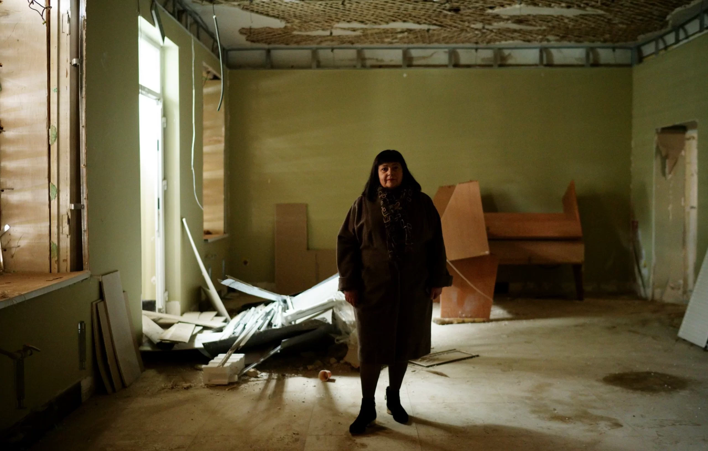
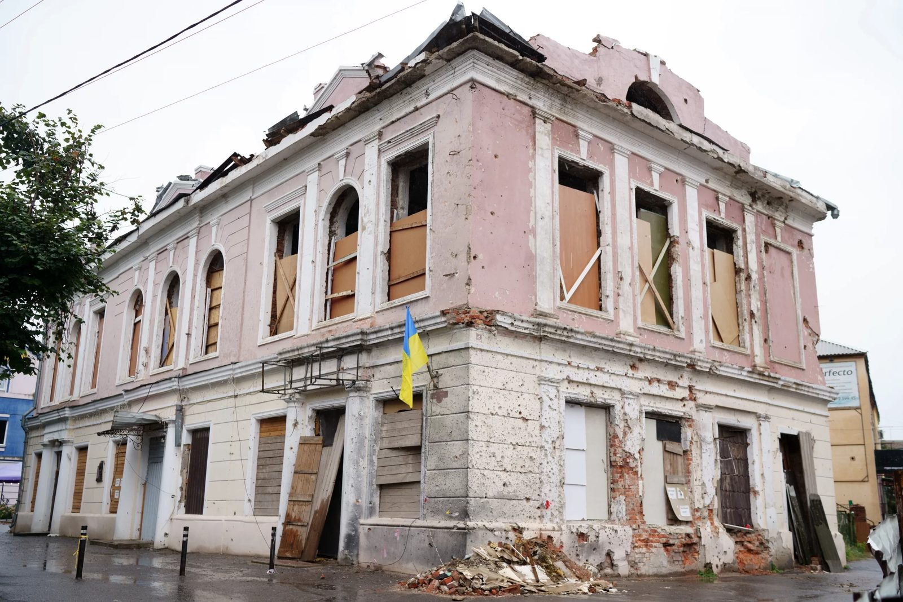
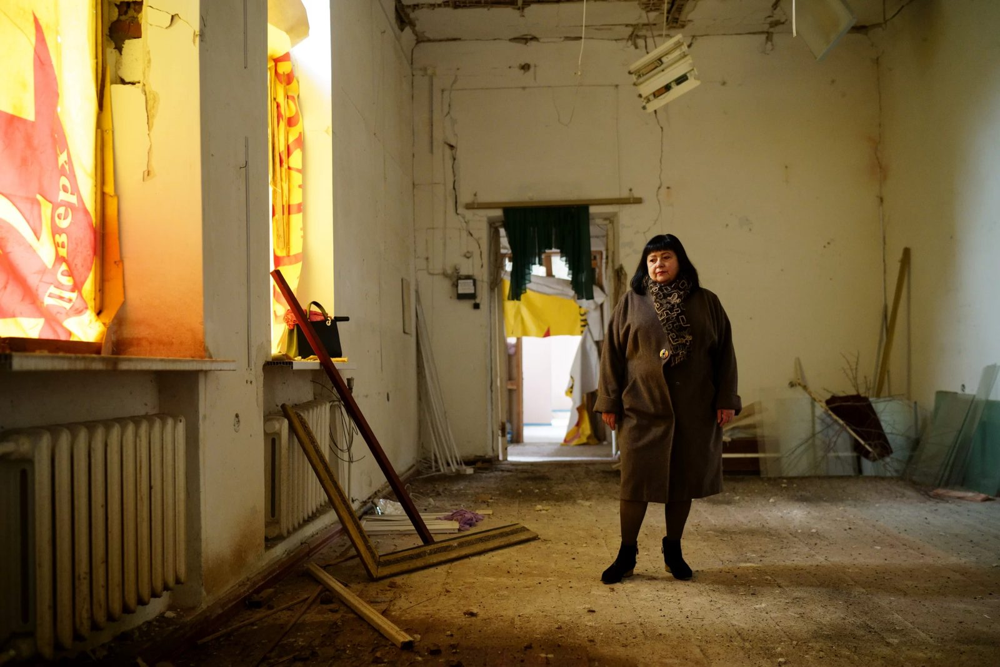
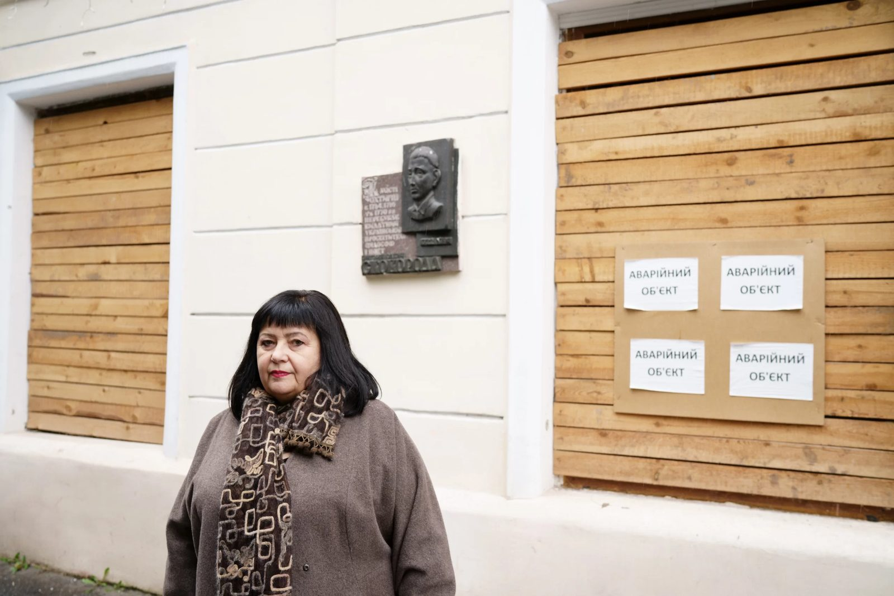
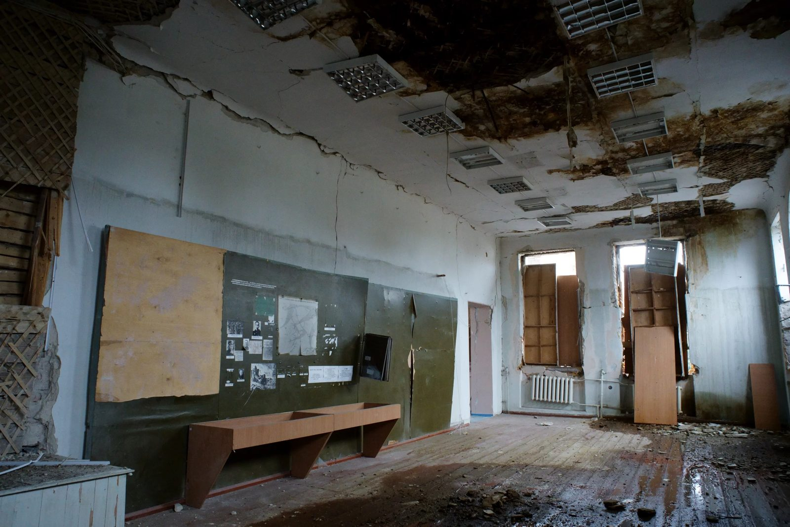
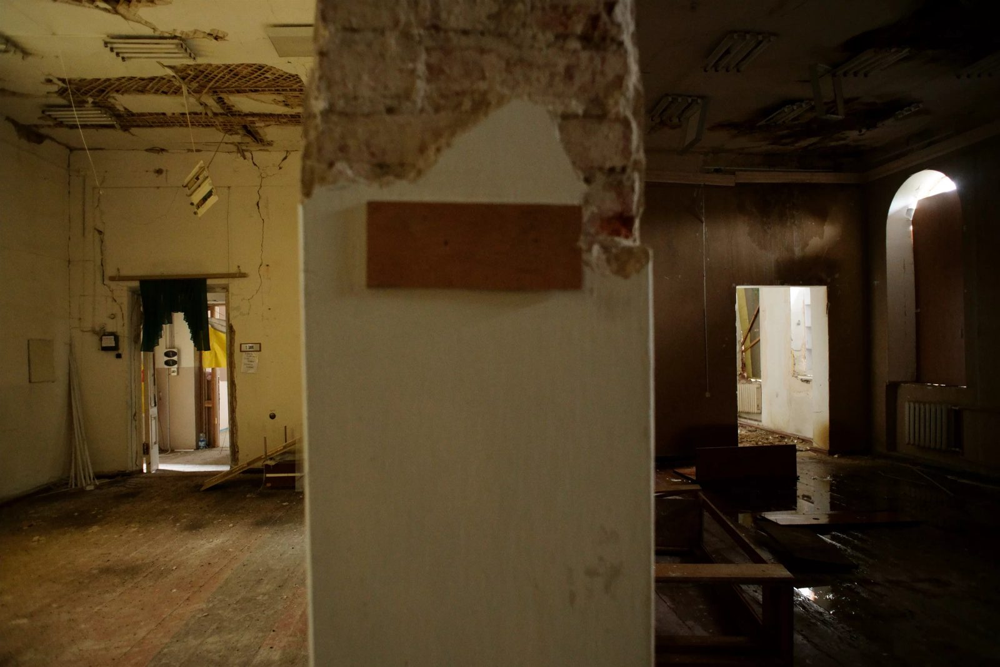
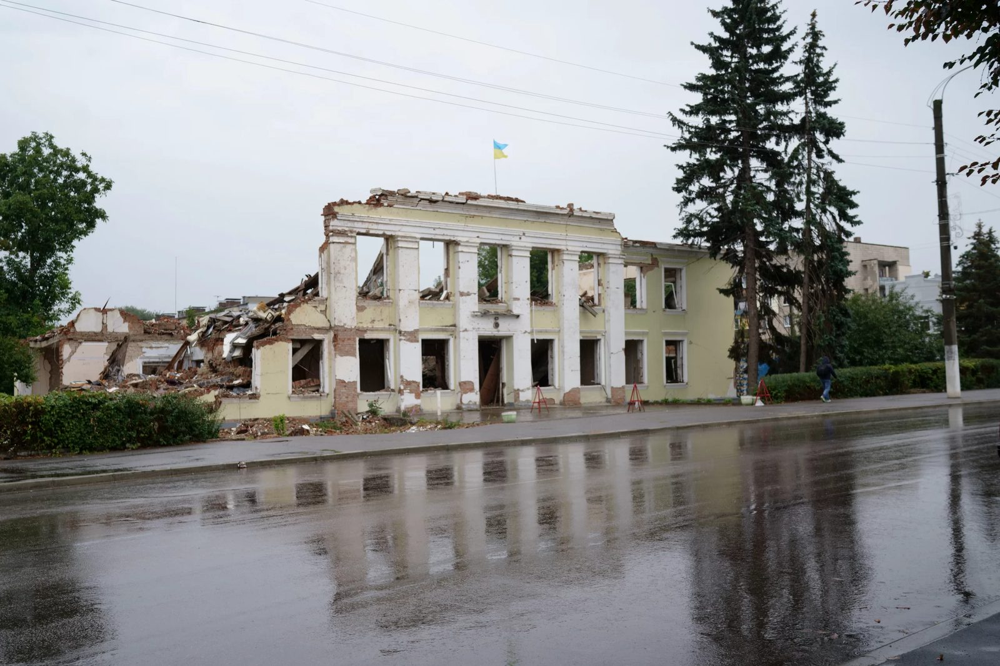
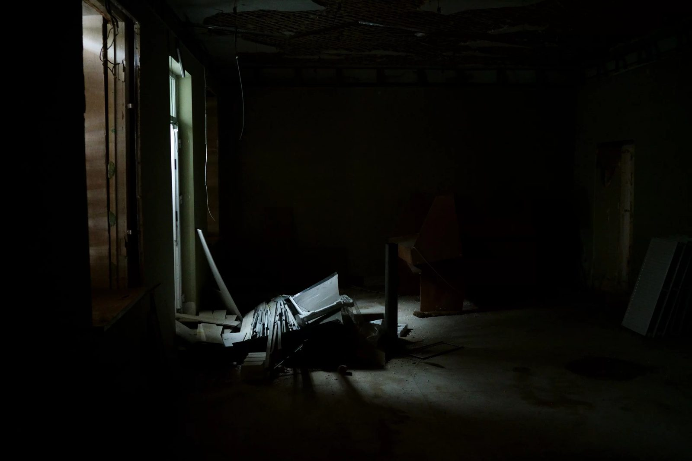
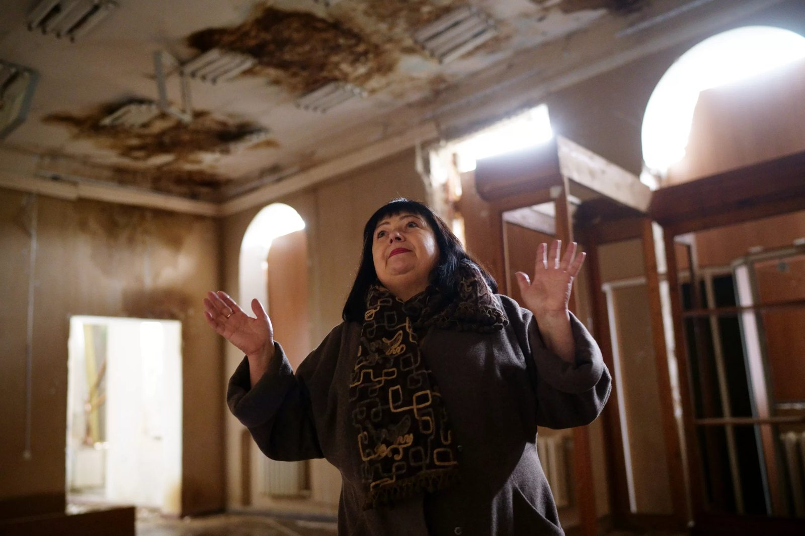

A museum that became an exhibit
09.05.23
The Okhtyrka Municipal Local History Museum belongs to an unfortunately long list of cultural and scientific institutions that suffered because of war. Its premises now look as an exponent themselves – the evidence of Russian barbarianism. There’s a three-meter wide pit from the aerial bomb next to the museum, – and a facade that’s the only thing left of the city hall, and a battered cultural center across the road. The two-story building of the museum remained standing but is too dangerous to use: the roof was broken, there are cracks a couple of centimeters wide on the walls, the doors and the windows were knocked out, and the facade is thickly marked with shrapnel.

Liudmyla Mishchenko, the director of the museum, gives us a tour of the empty building and tells us what were the exponents. In a couple of places, water is dripping from the ceiling. Mrs. Liudmyla has been working at the museum for 35 years; it’s hard for her to restrain her emotions.

Okhtyrka has a rather interesting history. This town in Sloboda Ukraine (a region in Eastern Ukraine that historically had more freedoms under the Russian Empire) developed on the frontier of the Russian Empire and had its own Cossack regiment (which was at the time not only a military but an administrative and territorial unit in autonomous Ukrainian lands).
In the 18th century, Okhtyrka was bigger than Kharkiv or Sumy, but later lost the race of urbanization in Sloboda Ukraine. There are many churches here; one of them, the Church of Protection of Holy Mary, was designed by Bartolomeo Rastrelli (architect of Italian origin. From 1716, lived and worked in the Russian Empire. Representative of late baroque and rococo) to honor a miraculous icon of the Virgin Mary that became a magnet for numerous pilgrims. Philosopher of Ukrainian Cossack origin who lived and worked in the Russian Empire. He was a poet, a teacher, and a composer of liturgical music Hryhorii Skovoroda and Ukrainian national poet Taras Shevchenko visited it. Before the Soviets, there were many wealthy homesteads around Okhtyrka; afterward, the oil and gas industry was developing here. Such a historical background promises a lot of interesting artifacts for the local museum.

The museum was founded a century ago, on the wave of enthusiasm during the brief period of the Soviet Ukrainisation policy. Ukrainian writer, translator, and Ukrainian language and culture researcher Borys Antonenko-Davydovych (responsible for education in Okhtyrka district) and Ukrainian pedagogue, poet, writer, and editor Matvii Dovhopoliuk, a friend of Mykola Skrypnyk (Ukrainian Soviet Party and state figure, one of the organizers of the Ukrainian Communist Party. Headed education in Soviet Ukraine and was one of the proponents of the Ukrainisation policy. Committed suicide during the Stalinist terror), were its founders. At the beginning of the 1920s, there was an orphanage in Oktyrka, where children who lost their parents during the tempestuous 1918-1920 lived. The Department of Education took the children on expeditions around Okhtyrka to gather exponents, including things from nationalized estates.
In a hundred years, the museum has collected a lot of exponents. There are over 12 thousand of them: personal belongings of Ivan Bahrianyi (Ukrainian writer. Born in Okhtyrka and issued his first book here. Arrested during the Stalinist terror, died in immigration) and Ostap Vyshnia (Ukrainian comedy writer, born not far from Okhtyrka. Arrested during the Stalinist terror, and later rehabilitated), archeological artifacts from Scythian times and Kyivan Rus times, Cossack weapons, woven carpets, embroidery of the 18th - 20th centuries, examples of Okhtyrka traditional clothing, numismatic collection, exponents connected to the oil industry, collection of paintings of the local artists. There are also stuffed animals typical of a local history museum.

The Okhtyrka Museum isn’t a passive one. The institution tries to be the center of local cultural and educational life. Mrs. Liudmyla has established a summer school of museology for children (an educational camp of a kind, with tours and practical workshops). Like in the times of Antonenko-Davydovych, the employees of the museum went on expeditions with children to find new exponents; they’ve found and restored old wooden chests.
The institution collaborates tightly with the archeologists who work at the Bilske Hillfort site (possibly once the Scythian city of Helon) and hosts lectures and conferences. The stories of Jews in Okhtyrka who became victims of the Holocaust are also researched here.

The museum tries to attract the locals of Okhtyrka with unusual events for a small town. For Museum Night in 2019, they invited Mykhailo Krasikov, an ethnographer from Kharkiv, to give a lecture about the folklore specifics of sexual life in Ukraine. This event was a great success.
Mrs. Liudmyla says that the museum has been preparing for the big war since 2014: they were collecting boxes and packaging materials. They asked employees of local stores to keep those for the museum. That’s how they managed to pack the exponents quickly on February, 24; the most valuable ones were transferred to the museum's storage vault, and at 11 am they locked the museum. At that moment, Russian military vehicles already were in the town. The 93rd Brigade of the Ukrainian Forces quickly pushed them out, but shelling and bombardments of the town continued.

On the night of March, 8, the Russians shelled the town hall, where the headquarters of the Territorial Defence (Territorial Defence Forces are the military reserve component of the Armed Forces of Ukraine) was, with a cruise missile. For certainty, they added a couple of aerial bombs to that; one of them fell next to the museum. Here, it’s only 50 kilometers from the Russian border, so there were often Russian warplanes seen in the sky, and air raid sirens were often heard after the shelling had already happened.
By that time, four of the ten employees of the museum had left the town, and in the circumstances of constant shelling, fuel shortages, and lack of premises it was hard to organize the rescue of the exponents.

The families of the museum employees, former attendees of the summer school, and sympathetic citizens joined the dismantling of the debris. During air raid warnings, they stopped the work and hid in the basement.
Ceramics and paintings were the exponents that had suffered the most. 29 objects were sent to the Kyiv Center of Restoration. Some others are being restored by local restorers.
Because of the lack of premises, the employees of the museum currently don’t host any events; they are busy with scientific work. Mrs. Liudmyla researches the biography and oeuvre of an ethnographer from Okhtyrka Oleksandr Tverdokhlebov, who collaborated with Kharkiv scientists Ukrainian historian, philosopher, and public figure Dmytro Bahalii and Ukrainian researcher of folklore and literature, and ethnographer Mykola Sumtsov. The director of the museum hopes that they’ll be able to build bigger premises, as the former building was too small anyway.
During WWII, Okhtyrka was one of the places where the big Battle of Kursk took place. The museum keeps the personal belongings of Museib Bagirov, born in Azerbaijan, who was one of those that pushed the Nazis out of the town. Thanks to these exponents, the museum has established friendly relationships with the Honorary Consul of Azerbaijan in Kharkiv. And now, when modern Russian Nazis have ruined the museum, he promises to help with rebuilding.

Liudmyla Mishchenko is one of those local history researchers who can talk about their own town for hours. Her tale about the museum was full of digressions and excursions into the history of the town and Sloboda Ukraine in general. Battles for Okhtyrka became an important stage of battling Russian aggression in the Sumy region. Nowadays, the town lives through difficult times, but they are historical, and therefore will certainly find their place among the exponents of the rebuilt museum.
A series of reports was carried out with the support of the Documenting Ukraine project from the Institut für die Wissenschaften vom Menschen.